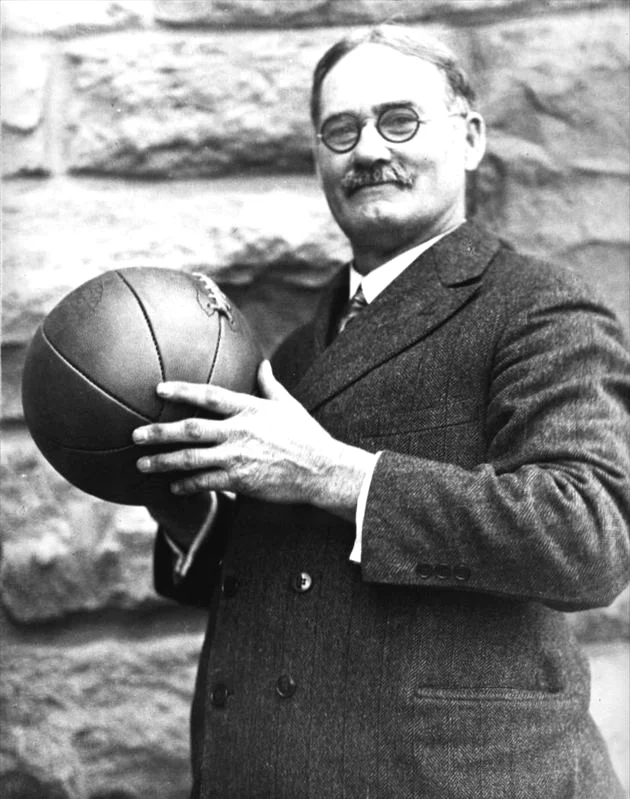

James Naismith
O basquetebol, ou simplesmente basquete, é um esporte coletivo praticado entre duas equipes. Ele é jogado com uma bola, onde o objetivo é inseri-la no cesto fixo que está localizado nas extremidades da quadra. Atualmente, o basquetebol é um dos jogos olímpicos mais populares no mundo. Nas escolas, é um dos esportes mais praticados nas aulas de educação física.
O esporte surgiu como uma alternativa ao inverno rigoroso da região, em detrimento dos outros praticados ao ar livre como o basebol e o futebol. Além disso, a ideia original era criar um esporte menos violento que o futebol americano. Aliado a isso, o professor criador pretendia integrar os alunos nas aulas de educação física e estimular a coletividade dos grupos. O primeiro jogo oficial de basquete foi disputado em 1892, e teve uma plateia aproximada de 200 pessoas. Nesse mesmo ano, as mulheres começaram a praticar essa modalidade. Já a primeira partida feminina ocorreu em 1896. A modalidade feminina foi inserida pela professora de educação física Senda Berenson (1868-1954). Foi também em 1896 que o esporte chegou ao Brasil, trazido pelo norte-americano Augusto Louis.
Menu Inicial